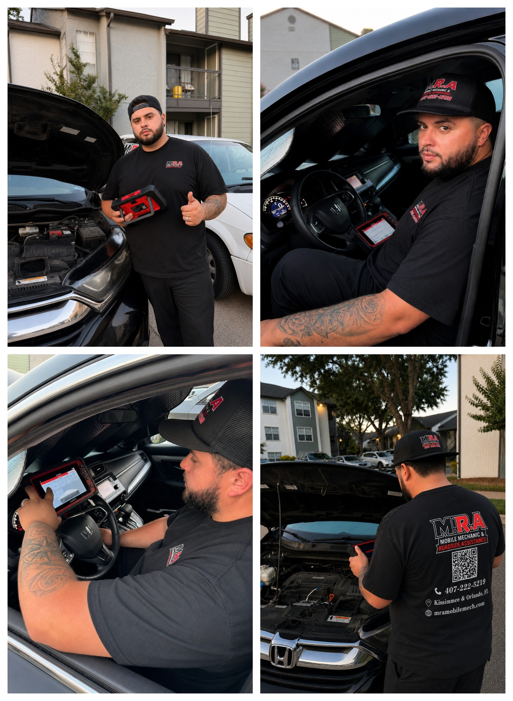

Diagnostics & Check Engine Light
Professional scanner diagnostics to accurately identify vehicle problems before replacing parts.
Mobile Mechanic Service • Kissimmee & Orlando, FL
M.R.A. Mobile Mechanic & Roadside Assistance counts with over 9 years of industry experience working on vehicles.
Our mission is to provide you with the highest quality service built on dependability, professionalism, and honesty.
Need your vehicle serviced or repaired? We will come to you and fix it correctly.
What we do
Professional scanner diagnostics to accurately identify vehicle problems before replacing parts.
Repairs and maintenance performed at your home, workplace, or wherever your vehicle is located.
Jump starts, battery replacement, lockouts, flat tires, fuel delivery, and emergency roadside support.
Brakes, tune-ups, belts, batteries, alternators, starters, suspension, cooling systems, and much more.
Starting, charging, ignition, sensor, and drivability diagnostics performed with professional equipment.
Tell us about your vehicle and receive a fast estimate before scheduling your service.

Meet the owner
My name is Gilberto Miguel Rufat Alvarez, founder and owner of M.R.A. Mobile Mechanic & Roadside Assistance.
My passion for the automotive industry began years ago, and I have been professionally working on vehicles since 2017. I graduated from Palm Beach State College in Lake Worth, Florida, where I earned my Automotive Technology certificate. Throughout my career, I gained valuable experience working in both used car dealerships and new car dealerships, allowing me to develop the skills and confidence to diagnose and repair a wide variety of vehicles.
In 2020, I decided to pursue my dream of building a company that puts customers first. That is how M.R.A. Mobile Mechanic & Roadside Assistance was born.
Today, with over 9 years of hands-on industry experience, my mission remains simple: provide dependable, honest, and professional mobile automotive service that customers can trust. Instead of wasting your time at a repair shop or paying for expensive towing, I bring the shop directly to you.
Every repair is performed with attention to detail, using proper diagnostic procedures and quality workmanship. I take pride in doing the job right the first time and standing behind every service I provide.
At M.R.A., we don't cut corners; we do it right.
Why choose M.R.A.
We bring professional automotive service directly to your location, saving you time, money, and the inconvenience of visiting a repair shop. Whether you're at home, work, or stranded on the road, our goal is to get you back on the road quickly and safely.
Need help today? Request a quote or contact us now.
Book a diagnostic
A pre-booking deposit is required depending on the service selected.
The required deposit reserves your appointment. Deposit requirements may vary based on the service selected, travel distance, vehicle type, reported concern, time required, and any additional testing needed.
Basic diagnostic service may include: basic computer diagnostic scan, visual inspection, check engine light review, common fault code review, and a standard on-site assessment.
What is not included: repairs, parts, labor, smoke testing, compression testing, leak-down testing, advanced electrical diagnosis, fuel pressure testing, programming/coding, or other specialized service procedures.
Any advanced or additional testing will be explained and approved before it is performed.
Terms & Conditions: By booking and paying the required pre-booking deposit, the customer agrees that the deposit reserves the appointment and is applied toward the approved service charge. The deposit is non-refundable for no-shows, late cancellations, incorrect service location, inaccessible vehicles, or failure to have the vehicle available at the scheduled time. Additional testing and final service charges may vary based on travel distance, vehicle condition, and required work. No repairs or specialized testing will be performed without customer approval.
Contact us today to book your appointment. Call or text us for fast, dependable roadside and mechanic support in Kissimmee and Orlando.